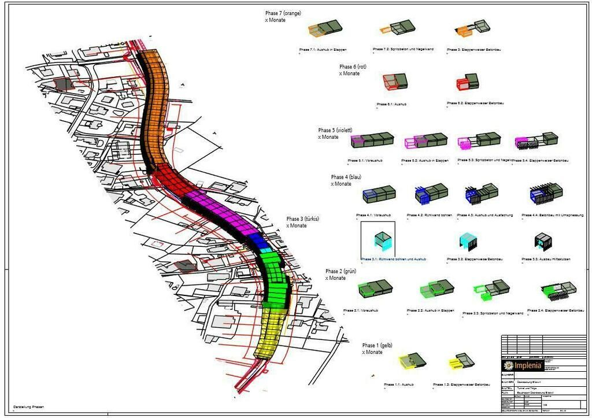
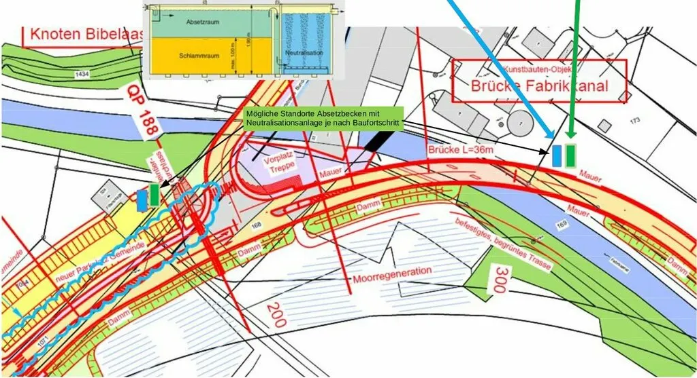

Bid Offer Motorway Feeder Road.
Freelancing Civil Engineer at the calculation department of a leading Swiss construction company

- Period
- 2018
- Project costs
- ± CHF 32 million (construction cost estimate)
- Client
- Canton of Aargau, Switzerland
- Location
- Canton of Aargau, Switzerland
The project
The new motorway feeder road is to channel traffic from a national highway at a junction and relieve through traffic in several city centres. The city centre cover is 250 m long and will be constructed as an opencast tunnel. The supporting structure is a robust, loosely reinforced closed frame 11.80 m wide and 7.40 m high. The clear width is 9.92 m, the clear height is 5.5 m. The tunnel has 2 lanes of 3.80 m and two banquets of 1.09 m and 1.23 m. The route has a 3% cross slope; the construction is horizontal. The component thicknesses are 55 cm to 75 cm. In longitudinal direction the tunnel is monolithic without dilatation joints. The element lengths are 10 m. The floor slab of the covering is formed horizontally and sealed according to specifications with mastic asphalt layer.
Challenges
The construction processes and procedures must be planned in such a way that the emissions caused by them (settlement/shock, noise, dust, etc.) have as little impact as possible on residents and site personnel. Therefore, a high degree of protection must be provided for peak loads on site, e.g. temporary noise barriers, night work, dust barriers, etc.
My role in the project
Freelancing Civil Engineer at the calculation department of a leading Swiss construction company, responsible for:
- Calculation of a bid offer for a major project (technical and financial part)
- Development of concepts for construction site logistics, drainage, waste disposal and installation
- Preparation of construction programs with MS Project
- Fundamentals of BIM modelling with Revit
Images
4 images from the project, click to enlarge
